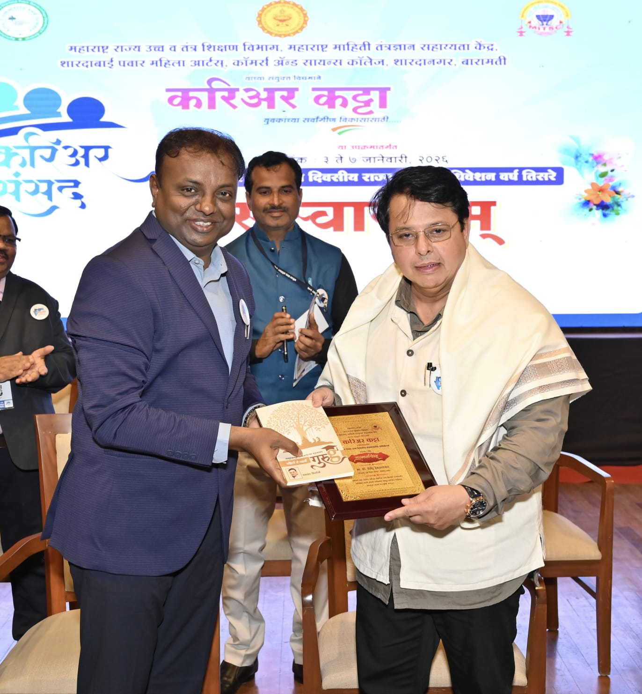
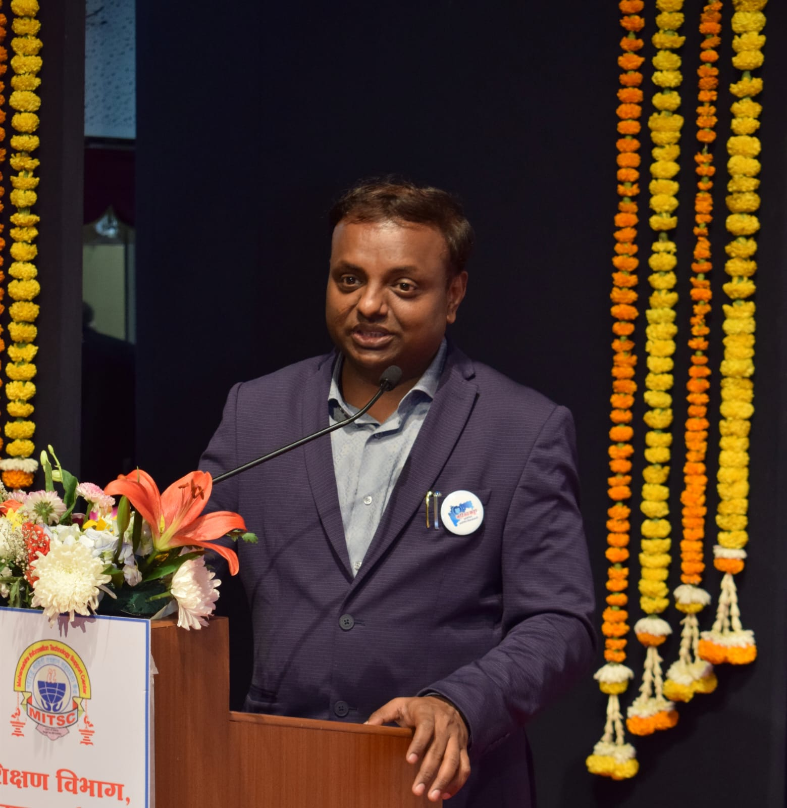
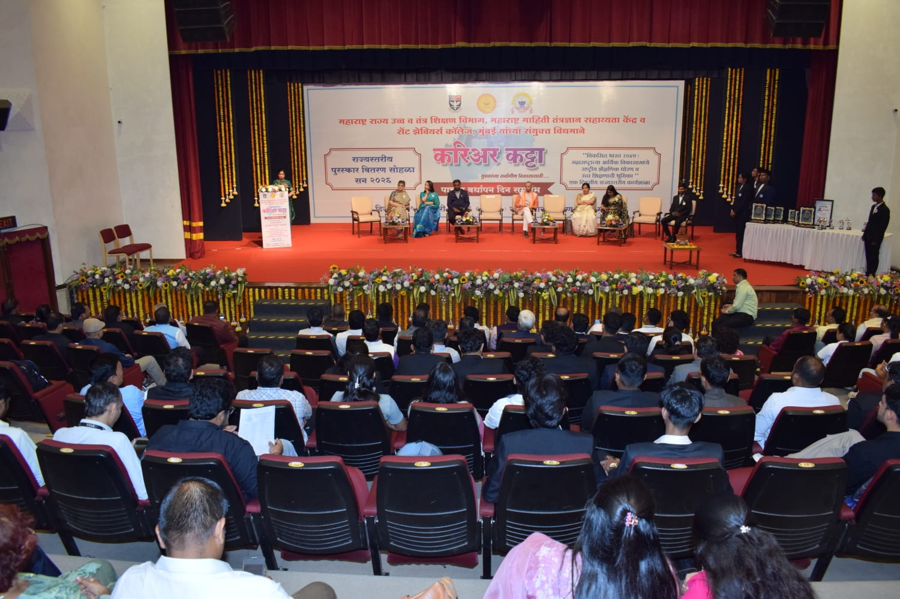
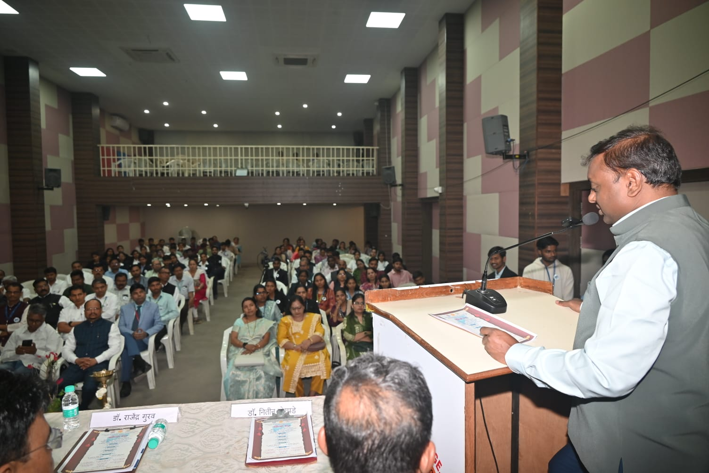

What is Career Katta and Why Was It Started?
For many years, students who passed college exams in Maharashtra still struggled to find good jobs. They had degrees, but they lacked important skills — like good communication, practical knowledge, and technical know-how — that companies actually look for.
To fix this problem, the Maharashtra government's Department of Higher and Technical Education joined hands with MITSC (Maharashtra Information Technology Support Center) to start Career Katta. This program uses technology to bring career guidance and skill training directly to students — even in remote villages and small towns.
It is inspired by the values of Swami Vivekananda (youth empowerment) and Dr. A.P.J. Abdul Kalam (building a strong India through education and technology).

Main Goal
NEP 2020 Education Reform


How is Career Katta Organized?
MITSC was registered under the Societies Registration Act of 1860. Its main office is at Mahila Bank Basement, Khasbag Maidan, Kolhapur. It is led by its Founder-President, Mr. Yashwant Shitole, and runs through more than 100 Youth Welfare Centers across Maharashtra.
At college visits across Maharashtra, Mr. Shitole encourages students to think of their career like a savings plan: invest a little time every day into learning useful skills. He urges rural students especially to spend at least 3 hours daily learning Artificial Intelligence (AI) — the technology that is changing every job in the world.
What Does Career Katta Actually Do?
Career Katta is much more than a lecture program. It is a complete learning system that connects over 5,000 colleges across Maharashtra and helps more than 2,00,000 students at the same time — all through their phones and the internet.
Learning on Your Phone
Students can access live classes, videos, and updates through a simple Android app — no laptop or expensive equipment needed.
Smart Progress Tracking
The system uses AI to track each student's progress and suggests a personalized learning plan — like having a personal career guide.
Verified Certificates
Students get certificates that companies can easily verify online — making it easier to trust and hire Career Katta graduates.
Courses Offered & Who They Help
| Course Name | What It Does | Who It Helps |
|---|---|---|
| IAS Aaplya Bhetila | Every day from 5–7 PM, IAS and government officers talk directly to students and explain how to prepare for UPSC and MPSC exams. | Village students who cannot afford costly coaching classes in cities. |
| Udyojak Aaplya Bhetila | Successful business owners meet students and teach them how to start and grow their own business — not just look for a job. | Students who want to become job creators, not just job seekers. |
| Vrittavedh | Daily news is explained in a simple way to help students answer current affairs questions in government exams. | Anyone preparing for government exams. |
| Indian Constitution | India's Constitution — the rule book of our country — is explained in easy language so every student understands their rights. | Students, citizens, and anyone who wants to understand Indian law. |
| EQ Club | Helps students manage stress, handle emotions, and build confidence — important for exams and life in general. | Students who feel anxious or overwhelmed during exam preparation. |
| Digital Marketing | Teaches how to grow a business online using social media, Google, and content creation tools. | Students who want to work from home or start a freelancing career. |
| Communication Skills | Helps students speak English better and improve their overall communication — a skill every company wants. | Rural students who struggle with English in job interviews. |
| Indian Knowledge System | Explores India's ancient wisdom, science, and culture — and how it connects to today's world. | Students interested in history, culture, and research. |
Students Are Getting Jobs
More than 2,800 students have already secured government jobs after using Career Katta. Private sector placements are also growing — for example, a student named Isha used Career Katta to improve her data skills and got a job at Zeta, a top technology company.
2,800+
Govt Jobs Secured
The 'Plan B' Idea: Always Have a Backup Plan
Many students from villages spend years — and their family's savings — preparing for government jobs in big cities like Pune, Mumbai, or Delhi. But only a small number of students get selected. The rest often return home feeling lost, stressed, and unsure about their future.
Career Katta teaches students to always have a "Plan B" — a backup career option they are building at the same time. This way, even if a student doesn't get the government job, they already have skills and options to fall back on.
The government is also helping by setting up Skill Development Centers and Startup Support Centers inside colleges. The goal is to support 10,000 exam students and 5,000 young business starters — giving everyone a fair chance, no matter where they come from.



How Much Does It Cost? And What Happened in 2025?
Career Katta is designed to be affordable for every student. The fee is just ₹365 for 3 years — that is less than ₹1 per day! This small amount is meant to be refunded to students through the college fee system. So in many cases, students get it almost free.
What Happened in October 2025?
On 19 October 2025, the government made Career Katta compulsory for all college students. Universities like SPPU, NMU, and SRTMUN were asked to collect the fee by 30 November 2025. This caused some concerns:
- Financial burden: Some students — especially those affected by recent floods — found it difficult to pay even ₹365 at that time.
- College independence: Some colleges felt that making it mandatory went against their right to make their own decisions about fees.
These concerns are being heard and discussed by the government to find a fair solution for everyone.